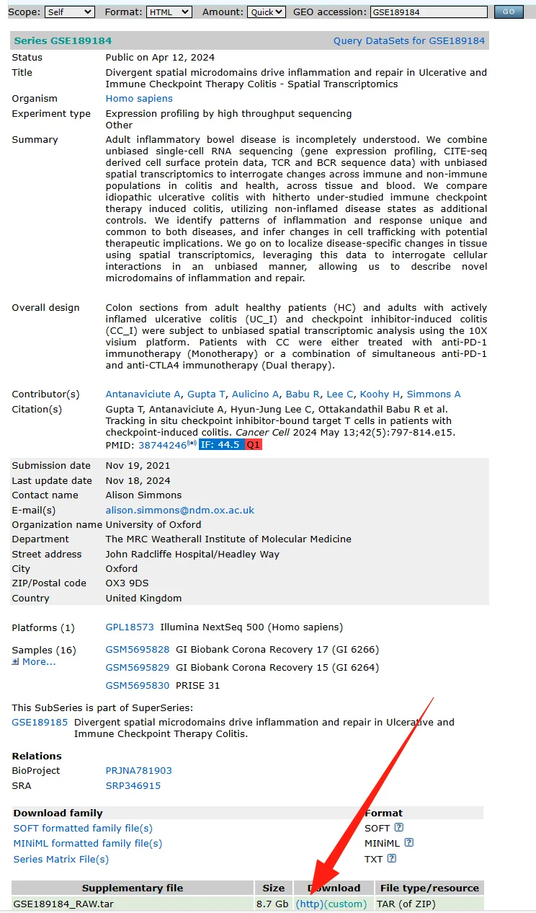
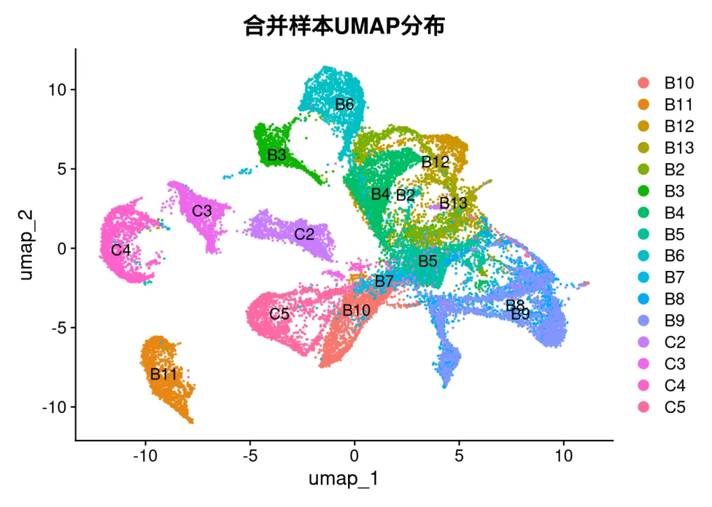
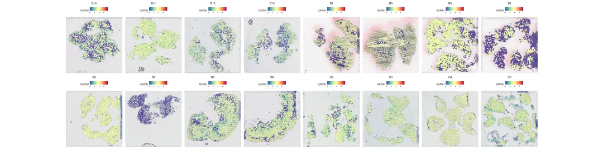
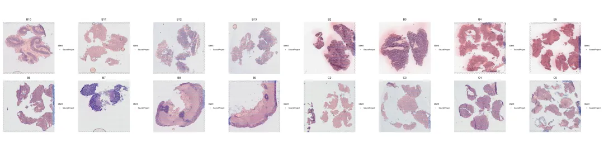

一次性读取文件夹下所有Visium数据
原文：https://mp.weixin.qq.com/s?__biz=MzAwMzIzOTk5OQ==&mid=2247531228&idx=1&sn=926a56069469d8f1cd49eb020080f44f&chksm=9b3c038cac4b8a9a5b99c047059bdd4e817e01bd47e59355858a92eb9c0b3561b32d7a88ae82#rd 合集：空间转录组
一、写在前面
此前我们给大家介绍了如何一次性读取一个目录下的cellranger输出文，类似的，也会有同学提问如何一次性读取空间转录组数据。其实我们此前就介绍了各类型空转数据的读取方式：空间转录组学习手册，只需要加入循环的代码即可。本教程基于服务器中的Rstudio完成。 更多空转教程可见：单细胞+空间转录组，Python全流程实战教学！联系客服微信[Biomamba_zhushou]参与学习
二、实操
这里我们以10X Visium 数据为例，来源于GSE189184，大家点击这里的按钮下载、解压，即可获得测试数据。

这里我放在了如下文件夹：# 看看各样本文件夹：
ls GSE189184_RAW/
# 以B10这个样本为例：
tree GSE189184_RAW/B10
## B10
## B11
## B12
## B13
## B2
## B3
## B4
## B5
## B6
## B7
## B8
## B9
## C2
## C3
## C4
## C5
## [01;34mGSE189184_RAW/B10[00m
## ├── [01;34manalysis[00m
## │ ├── [01;34mclustering[00m
## │ │ ├── [01;34mgraphclust[00m
## │ │ │ └── clusters.csv
## │ │ ├── [01;34mkmeans_10_clusters[00m
## │ │ │ └── clusters.csv
## │ │ ├── [01;34mkmeans_2_clusters[00m
## │ │ │ └── clusters.csv
## │ │ ├── [01;34mkmeans_3_clusters[00m
## │ │ │ └── clusters.csv
## │ │ ├── [01;34mkmeans_4_clusters[00m
## │ │ │ └── clusters.csv
## │ │ ├── [01;34mkmeans_5_clusters[00m
## │ │ │ └── clusters.csv
## │ │ ├── [01;34mkmeans_6_clusters[00m
## │ │ │ └── clusters.csv
## │ │ ├── [01;34mkmeans_7_clusters[00m
## │ │ │ └── clusters.csv
## │ │ ├── [01;34mkmeans_8_clusters[00m
## │ │ │ └── clusters.csv
## │ │ └── [01;34mkmeans_9_clusters[00m
## │ │ └── clusters.csv
## │ ├── [01;34mdiffexp[00m
## │ │ ├── [01;34mgraphclust[00m
## │ │ │ └── differential_expression.csv
## │ │ ├── [01;34mkmeans_10_clusters[00m
## │ │ │ └── differential_expression.csv
## │ │ ├── [01;34mkmeans_2_clusters[00m
## │ │ │ └── differential_expression.csv
## │ │ ├── [01;34mkmeans_3_clusters[00m
## │ │ │ └── differential_expression.csv
## │ │ ├── [01;34mkmeans_4_clusters[00m
## │ │ │ └── differential_expression.csv
## │ │ ├── [01;34mkmeans_5_clusters[00m
## │ │ │ └── differential_expression.csv
## │ │ ├── [01;34mkmeans_6_clusters[00m
## │ │ │ └── differential_expression.csv
## │ │ ├── [01;34mkmeans_7_clusters[00m
## │ │ │ └── differential_expression.csv
## │ │ ├── [01;34mkmeans_8_clusters[00m
## │ │ │ └── differential_expression.csv
## │ │ └── [01;34mkmeans_9_clusters[00m
## │ │ └── differential_expression.csv
## │ ├── [01;34mpca[00m
## │ │ └── [01;34m10_components[00m
## │ │ ├── components.csv
## │ │ ├── dispersion.csv
## │ │ ├── features_selected.csv
## │ │ ├── projection.csv
## │ │ └── variance.csv
## │ ├── [01;34mtsne[00m
## │ │ └── [01;34m2_components[00m
## │ │ └── projection.csv
## │ └── [01;34mumap[00m
## │ └── [01;34m2_components[00m
## │ └── projection.csv
## ├── cloupe.cloupe
## ├── [01;34mfiltered_feature_bc_matrix[00m
## │ ├── [01;31mbarcodes.tsv.gz[00m
## │ ├── [01;31mfeatures.tsv.gz[00m
## │ └── [01;31mmatrix.mtx.gz[00m
## ├── filtered_feature_bc_matrix.h5
## ├── metrics_summary.csv
## ├── molecule_info.h5
## ├── [01;34mraw_feature_bc_matrix[00m
## │ ├── [01;31mbarcodes.tsv.gz[00m
## │ ├── [01;31mfeatures.tsv.gz[00m
## │ └── [01;31mmatrix.mtx.gz[00m
## ├── raw_feature_bc_matrix.h5
## ├── [01;34mspatial[00m
## │ ├── [01;35maligned_fiducials.jpg[00m
## │ ├── [01;35mdetected_tissue_image.jpg[00m
## │ ├── scalefactors_json.json
## │ ├── tissue_hires_image.png
## │ ├── tissue_lowres_image.png
## │ └── tissue_positions_list.csv
## └── web_summary.html
##
## 32 directories, 45 files
1、安装并加载R包
# 加载必要的包
if(!require(hdf5r))install.packages('hdf5r')
## Loading required package: hdf5r
if(!require(Seurat))install.packages('Seurat')
## Loading required package: Seurat
## Loading required package: SeuratObject
## Loading required package: sp
## 'SeuratObject' was built with package 'Matrix' 1.7.1 but the current
## version is 1.7.2; it is recomended that you reinstall 'SeuratObject' as
## the ABI for 'Matrix' may have changed
##
## Attaching package: 'SeuratObject'
## The following objects are masked from 'package:base':
##
## intersect, t
if(!require(ggplot2))install.packages('ggplot2')
## Loading required package: ggplot2
if(!require(patchwork))install.packages('patchwork')
## Loading required package: patchwork
if(!require(rjson))install.packages('rjson')
## Loading required package: rjson
if(!require(SeuratData))BiocManager::install('SeuratData')
## Loading required package: SeuratData
## ── Installed datasets ──────────────────────────────── SeuratData v0.2.2.9001 ──
## ✔ stxBrain 0.1.1
## ────────────────────────────────────── Key ─────────────────────────────────────
## ✔ Dataset loaded successfully
## ❯ Dataset built with a newer version of Seurat than installed
## ❓ Unknown version of Seurat installed
if(!require(SeuratObject))BiocManager::install('SeuratObject')
if(!require(fs))BiocManager::install('fs')
## Loading required package: fs
3、读取数据
# --------------------------
# (1). 设置参数与样本路径
# --------------------------
# 获取所有样本文件夹（二级文件夹，如B10、B11等，排除子目录）
sample_dirs <-list.dirs(path ='./GSE189184_RAW', full.names =TRUE, recursive =FALSE)
# 检查样本文件夹是否存在
if (length(sample_dirs) ==0) {
stop("未找到样本文件夹，请检查主目录路径是否正确！")
}
cat("找到", length(sample_dirs), "个样本文件夹：", basename(sample_dirs), "\n")
## 找到 16 个样本文件夹： B10 B11 B12 B13 B2 B3 B4 B5 B6 B7 B8 B9 C2 C3 C4 C5
# --------------------------
# (2). 循环读取每个样本的空间转录组数据
# --------------------------
# 存储所有样本Seurat对象的列表
seurat_list <-list()
# 写一个for循环，循环读入数据并添加对象到列表中：
for (i inseq_along(sample_dirs)) {
sample_name <-basename(sample_dirs[i])
cat("正在读取样本：", sample_name, "（", i, "/", length(sample_dirs), "）\n", sep ="")
# 检查关键文件是否存在
# 10X空间转录组核心数据目录（包含filtered_feature_bc_matrix和spatial）
data_dir <- sample_dirs[i]
# 检查spatial目录及JSON文件是否存在（避免JSON解析错误）
spatial_dir <-file.path(data_dir, "spatial")
scalefactors_file <-file.path(spatial_dir, "scalefactors_json.json")
if (!dir_exists(spatial_dir)) {
warning("样本", sample_name, "缺少spatial目录，跳过该样本！")
next
}
if (!file_exists(scalefactors_file)) {
warning("样本", sample_name, "的spatial目录中缺少scalefactors_json.json文件，跳过该样本！")
next
}
# 读取10X空间转录组数据（重点：指定spatial目录路径，避免JSON解析错误）
tryCatch({
seurat_obj <-Load10X_Spatial(
data.dir = data_dir, # 样本主目录（包含filtered_feature_bc_matrix和spatial）
filename ="filtered_feature_bc_matrix.h5", # 计数矩阵H5文件
assay ="Spatial", # 默认为"Spatial" assay
slice = sample_name, # 切片名称（用样本名标识）
filter.matrix =TRUE# 过滤低质量细胞
)
# 为样本添加唯一标识（用于后续区分样本）
seurat_obj@meta.data$sample <- sample_name
seurat_list[[i]] <- seurat_obj# 加入Seurat对象的List
}, error =function(e) {
warning("读取样本", sample_name, "失败：", e$message, "，跳过该样本！")
})
}
## 正在读取样本：B10（1/16）
## 正在读取样本：B11（2/16）
## 正在读取样本：B12（3/16）
## 正在读取样本：B13（4/16）
## 正在读取样本：B2（5/16）
## 正在读取样本：B3（6/16）
## 正在读取样本：B4（7/16）
## 正在读取样本：B5（8/16）
## 正在读取样本：B6（9/16）
## 正在读取样本：B7（10/16）
## 正在读取样本：B8（11/16）
## 正在读取样本：B9（12/16）
## 正在读取样本：C2（13/16）
## 正在读取样本：C3（14/16）
## 正在读取样本：C4（15/16）
## 正在读取样本：C5（16/16）
# 检查是否成功读取样本
if (length(seurat_list) ==0) {
stop("所有样本读取失败，请检查数据格式或文件完整性！")
}
# --------------------------
# 3. 合并所有样本为一个Seurat对象
# --------------------------
# 合并列表中的Seurat对象
combined_seurat <-merge(
x = seurat_list[[1]],# lisst中的第一个对象
y = seurat_list[-1],# lisst中除了第一个对象的所有对象
add.cell.ids =basename(sample_dirs)[sapply(seurat_list, function(x) !is.null(x))] # 为细胞ID添加样本前缀
)
# 查看合并结果
cat("合并完成！总细胞数：", ncol(combined_seurat), "\n")
## 合并完成！总细胞数： 26373
print(combined_seurat)
## An object of class Seurat
## 38224 features across 26373 samples within 1 assay
## Active assay: Spatial (38224 features, 0 variable features)
## 16 layers present: counts.1, counts.2, counts.3, counts.4, counts.5, counts.6, counts.7, counts.8, counts.9, counts.10, counts.11, counts.12, counts.13, counts.14, counts.15, counts.16
## 16 spatial fields of view present: B10 B11 B12 B13 B2 B3 B4 B5 B6 B7 B8 B9 C2 C3 C4 C5
# --------------------------
# 4. 可选：基本可视化（检查样本分布）
# --------------------------
# 对每个样本进行降维
combined_seurat <-NormalizeData(combined_seurat, assay ="Spatial", verbose =FALSE)# 矩阵标准化
combined_seurat <-FindVariableFeatures(combined_seurat)# 寻找高变基因
## Finding variable features for layer counts.1
## Finding variable features for layer counts.2
## Finding variable features for layer counts.3
## Finding variable features for layer counts.4
## Finding variable features for layer counts.5
## Finding variable features for layer counts.6
## Finding variable features for layer counts.7
## Finding variable features for layer counts.8
## Finding variable features for layer counts.9
## Finding variable features for layer counts.10
## Finding variable features for layer counts.11
## Finding variable features for layer counts.12
## Finding variable features for layer counts.13
## Finding variable features for layer counts.14
## Finding variable features for layer counts.15
## Finding variable features for layer counts.16
combined_seurat <-ScaleData(combined_seurat,VariableFeatures(combined_seurat))# 利用高变基因缩放表达矩阵
## Centering and scaling data matrix
combined_seurat <-RunPCA(combined_seurat, verbose =FALSE)# PCA降维
combined_seurat <-RunUMAP(combined_seurat, reduction ="pca", dims =1:30, verbose =FALSE)# UMAP降维
## Warning: The default method for RunUMAP has changed from calling Python UMAP via reticulate to the R-native UWOT using the cosine metric
## To use Python UMAP via reticulate, set umap.method to 'umap-learn' and metric to 'correlation'
## This message will be shown once per session
# 按样本分组可视化UMAP
DimPlot(combined_seurat, group.by ="sample", label =TRUE) +ggtitle("合并样本UMAP分布")

# 画一个管家基因看看数据有没有问题：
SpatialFeaturePlot(combined_seurat, features =c("GAPDH"),pt.size.factor =2.5,ncol =8)

# 再看看切片的概况：
SpatialDimPlot(combined_seurat,ncol =8)

三、学习手册
一切不分享代码和测试文件的教程都是耍流氓通过网盘分享的文件：一次性读取文件夹下所有Visium数据
链接: https://pan.baidu.com/s/1a1S7hJbv0Mm_tj8XEVTQ5Q?pwd=w94p
提取码: w94p
四、分析环境
sessionInfo()
## R version 4.4.2 (2024-10-31)
## Platform: x86_64-pc-linux-gnu
## Running under: Ubuntu 20.04.4 LTS
##
## Matrix products: default
## BLAS: /usr/lib/x86_64-linux-gnu/openblas-pthread/libblas.so.3
## LAPACK: /usr/lib/x86_64-linux-gnu/openblas-pthread/liblapack.so.3; LAPACK version 3.9.0
##
## locale:
## [1] LC_CTYPE=en_US.UTF-8 LC_NUMERIC=C
## [3] LC_TIME=en_US.UTF-8 LC_COLLATE=en_US.UTF-8
## [5] LC_MONETARY=en_US.UTF-8 LC_MESSAGES=en_US.UTF-8
## [7] LC_PAPER=en_US.UTF-8 LC_NAME=C
## [9] LC_ADDRESS=C LC_TELEPHONE=C
## [11] LC_MEASUREMENT=en_US.UTF-8 LC_IDENTIFICATION=C
##
## time zone: Etc/UTC
## tzcode source: system (glibc)
##
## attached base packages:
## [1] stats graphics grDevices utils datasets methods base
##
## other attached packages:
## [1] fs_1.6.5 stxBrain.SeuratData_0.1.1
## [3] SeuratData_0.2.2.9001 rjson_0.2.23
## [5] patchwork_1.3.0 ggplot2_3.5.1
## [7] Seurat_5.2.1 SeuratObject_5.0.2
## [9] sp_2.2-0 hdf5r_1.3.12
##
## loaded via a namespace (and not attached):
## [1] RColorBrewer_1.1-3 rstudioapi_0.17.1 jsonlite_1.8.9
## [4] magrittr_2.0.3 spatstat.utils_3.1-4 farver_2.1.2
## [7] rmarkdown_2.29 vctrs_0.6.5 ROCR_1.0-11
## [10] spatstat.explore_3.4-3 htmltools_0.5.8.1 sass_0.4.9
## [13] sctransform_0.4.1 parallelly_1.42.0 KernSmooth_2.23-26
## [16] bslib_0.9.0 htmlwidgets_1.6.4 ica_1.0-3
## [19] plyr_1.8.9 plotly_4.10.4 zoo_1.8-12
## [22] cachem_1.1.0 igraph_2.1.4 mime_0.12
## [25] lifecycle_1.0.4 pkgconfig_2.0.3 Matrix_1.7-2
## [28] R6_2.5.1 fastmap_1.2.0 fitdistrplus_1.2-2
## [31] future_1.34.0 shiny_1.10.0 digest_0.6.37
## [34] colorspace_2.1-1 tensor_1.5 RSpectra_0.16-2
## [37] irlba_2.3.5.1 labeling_0.4.3 progressr_0.15.1
## [40] spatstat.sparse_3.1-0 httr_1.4.7 polyclip_1.10-7
## [43] abind_1.4-8 compiler_4.4.2 bit64_4.6.0-1
## [46] withr_3.0.2 fastDummies_1.7.5 MASS_7.3-64
## [49] rappdirs_0.3.3 tools_4.4.2 lmtest_0.9-40
## [52] httpuv_1.6.15 future.apply_1.11.3 goftest_1.2-3
## [55] glue_1.8.0 nlme_3.1-168 promises_1.3.2
## [58] grid_4.4.2 Rtsne_0.17 cluster_2.1.8
## [61] reshape2_1.4.4 generics_0.1.3 gtable_0.3.6
## [64] spatstat.data_3.1-6 tzdb_0.4.0 tidyr_1.3.1
## [67] data.table_1.16.4 hms_1.1.3 spatstat.geom_3.4-1
## [70] RcppAnnoy_0.0.22 ggrepel_0.9.6 RANN_2.6.2
## [73] pillar_1.10.1 stringr_1.5.1 spam_2.11-1
## [76] RcppHNSW_0.6.0 later_1.4.1 splines_4.4.2
## [79] dplyr_1.1.4 lattice_0.22-6 cherryblossom_0.1.0
## [82] survival_3.8-3 bit_4.5.0.1 deldir_2.0-4
## [85] tidyselect_1.2.1 miniUI_0.1.1.1 pbapply_1.7-2
## [88] knitr_1.49 gridExtra_2.3 scattermore_1.2
## [91] airports_0.1.0 xfun_0.50 matrixStats_1.5.0
## [94] stringi_1.8.4 lazyeval_0.2.2 yaml_2.3.10
## [97] evaluate_1.0.3 codetools_0.2-20 tibble_3.2.1
## [100] cli_3.6.3 uwot_0.2.2 xtable_1.8-4
## [103] reticulate_1.40.0 munsell_0.5.1 jquerylib_0.1.4
## [106] Rcpp_1.0.14 globals_0.16.3 spatstat.random_3.4-1
## [109] png_0.1-8 spatstat.univar_3.1-3 parallel_4.4.2
## [112] usdata_0.3.1 readr_2.1.5 dotCall64_1.2
## [115] listenv_0.9.1 viridisLite_0.4.2 scales_1.3.0
## [118] ggridges_0.5.6 purrr_1.0.2 crayon_1.5.3
## [121] openintro_2.5.0 rlang_1.1.5 cowplot_1.1.3
更多空间转录组分析教程可见：空间转录组学习手册
如果以上内容对你有帮助，欢迎在文章的Acknowledgement中加上这一段：
Since Biomamba and his wechat public account team produce bioinformatics tutorials and share code with annotation, we thank Biomamba for their guidance in bioinformatics and data analysis for the current study.
欢迎在发文/毕业时向我们分享你的喜悦~

如何联系我们

 留一个领取资料、开箱即用的单细胞分析镜像的微信号[Biomamba_zhushou]，方便各位随时交流。同时我们也构建了交流群矩阵，欢迎大家入群讨论。
大家可以阅读完这几篇之后添加给生信入门初学者的小贴士
没有检索，就没有发言权
留一个领取资料、开箱即用的单细胞分析镜像的微信号[Biomamba_zhushou]，方便各位随时交流。同时我们也构建了交流群矩阵，欢迎大家入群讨论。
大家可以阅读完这几篇之后添加给生信入门初学者的小贴士
没有检索，就没有发言权
已有生信基地联系方式的同学无需重复添加

 您点的每个赞和在看，我都认真当成了喜欢
您点的每个赞和在看，我都认真当成了喜欢